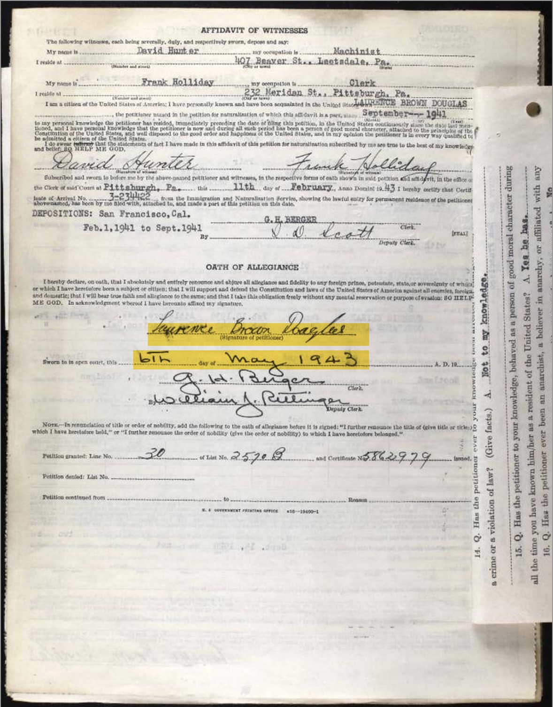

The Names He Carried · Academic Edition
Doug Garceau, comp., “Affidavit of witnesses and oath of allegiance: Laurence Brown Douglas,” DOC-050, The Names He Carried: Academic Edition (https://douggarceau.com/the-names-he-carried/archive/items/doc-050.html : accessed [date]); original: Petition for naturalization 139903, U.S. District Court, Western District of Pennsylvania. Via Ancestry.

This copy carries yellow highlighting or red outlining added for the book site. It is not on the original.
Tap an image to open it full size.
Everything as written, including misspellings. [?] marks an uncertain reading. Struck-through words are marked as struck through. Notes in square brackets describe the page and are not part of it.
[Printed] AFFIDAVIT OF WITNESSES The following witnesses, each being severally, duly, and respectively sworn, depose and say: My name is David Hunter my occupation is Machinist I reside at 407 Beaver St., Leetsdale, Pa. My name is Frank Holliday my occupation is Clerk I reside at 232 Meridan St., Pittsburgh, Pa. I am a citizen of the United States of America; I have personally known and have been acquainted in the United States with LAURENCE BROWN DOUGLAS the petitioner named in the petition for naturalization of which this affidavit is a part, since September --- 1941 to my personal knowledge the petitioner has resided, immediately preceding the date of filing this petition, in the United States continuously since the date last mentioned, and I have personal knowledge that the petitioner is now and during all such period has been a person of good moral character, attached to the principles of the Constitution of the United States, and well disposed to the good order and happiness of the United States, and in my opinion the petitioner is in every way qualified to be admitted a citizen of the United States. I do swear [affirm — struck through] that the statements of fact I have made in this affidavit of this petition for naturalization subscribed by me are true to the best of my knowledge and belief: SO HELP ME GOD. [Signed] David Hunter (Signature of witness) [Signed] Frank Holliday (Signature of witness) Subscribed and sworn to before me by the above-named petitioner and witnesses, in the respective forms of oath shown in said petition and affidavit, in the office of the Clerk of said Court at Pittsburgh, Pa. this 11th day of February, Anno Domini 1943 I hereby certify that Certificate of Arrival No. 3-234422 from the Immigration and Naturalization Service, showing the lawful entry for permanent residence of the petitioner abovenamed, has been by me filed with, attached to, and made a part of this petition on this date. DEPOSITIONS: San Francisco, Cal. Feb.1,1941 to Sept.1941 G.H.BERGER Clerk. By [Signed] J. D. Scott[?] Deputy Clerk. [SEAL] [Printed] OATH OF ALLEGIANCE I hereby declare, on oath, that I absolutely and entirely renounce and abjure all allegiance and fidelity to any foreign prince, potentate, state, or sovereignty of whom or which I have heretofore been a subject or citizen; that I will support and defend the Constitution and laws of the United States of America against all enemies, foreign and domestic; that I will bear true faith and allegiance to the same; and that I take this obligation freely without any mental reservation or purpose of evasion: SO HELP ME GOD. In acknowledgment whereof I have hereunto affixed my signature. [Signed] Laurence Brown Douglas (Signature of petitioner) Sworn to in open court, this 6th day of May 1943 A. D. 19__ [Signed] G. H. Berger Clerk. By [Signed] William J. Rittinger[?] Deputy Clerk. NOTE.—In renunciation of title or order of nobility, add the following to the oath of allegiance before it is signed: "I further renounce the title of (give title or titles) which I have heretofore held," or "I further renounce the order of nobility (give the order of nobility) to which I have heretofore belonged." Petition granted: Line No. 30 of List No. 2570 B and Certificate No. 5862979 issued. Petition denied: List No. [blank] Petition continued from [blank] to [blank] Reason [blank] [Printed] U. S. GOVERNMENT PRINTING OFFICE 16—19460-1 [A second sheet is folded in on the right side, printed sideways. Readable parts:] 14. Q. Has the petitioner ever to your knowledge been arrested or charged with a crime or a violation of law? (Give facts.) A. Not to my knowledge. 15. Q. Has the petitioner to your knowledge, behaved as a person of good moral character during all the time you have known him/her as a resident of the United States? A. Yes he has. 16. Q. Has the petitioner ever been an anarchist, a believer in anarchy, or affiliated with any [cut off] A. No [cut off] [Faint show-through from the petition on the other side of the page is visible but is not part of this page]